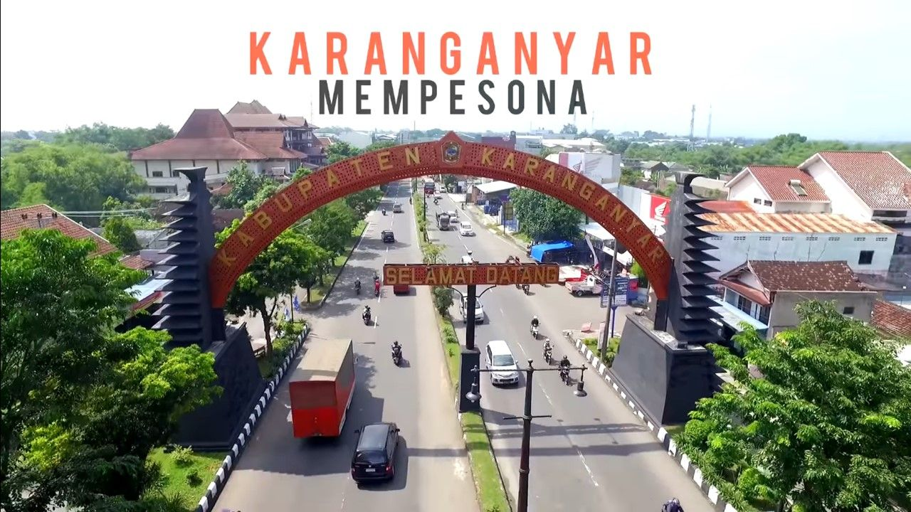
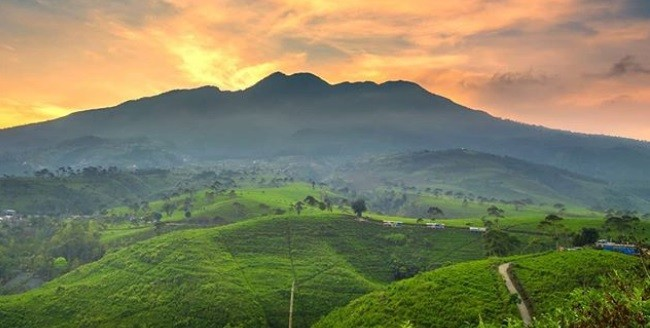
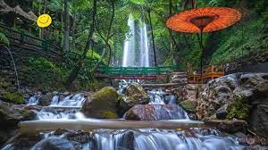
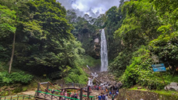

Sejarah

Kabupaten Karanganyar merupakan sebuah wilayah di sebelah timur Kota Surakarta yang memiliki banyak destinasi wisata. Nama Kabupaten Karanganyar memiliki sejarah
panjang dari era kekuasaan Mataram Islam hingga menjadi kabupaten. Konon, Karanganyar merupakan wilayah yang sangat penting bagi Pangeran Sambernyawa atau Raden Mas Said.
Dahulu, Karanganyar merupakan wilayah hutan belantara yang di dalamnya terdapat sosok wanita bernama Nyi Ageng Karang. Nama Kabupaten Karanganyar diberikan oleh Raden Mas
Said yang dikenal dengan sebutan Pangeran Sambernyawa. Sementara itu, Kabupaten Karanganyar berdiri pada 19 April 1945 atau tepatnya sebelum Proklamasi Kemerdekaan Republik Indonesia. Konon, Karanganyar adalah nama dukuh kecil yang berada di Kasunanan Surakarta pada saat pemerintahan Sri Pakubuwono II. Namun, setelah Perjanjian Giyanti disepakati pada 1755, Karanganyar berada di bawah kekuasaan Kasultanan Yogyakarta. Saat itu, Yogyakarta dipimpin oleh Pangeran Mangkubumi atau Hamengkubuwana I.
Asal-usul nama Karanganyar terbentuk dari 3 buah suku kata yang memiliki arti masing-masing. Ka merupakan kependekan dari kalimat Bahasa Jawa “kawibawaning dipun gayuh” yang
berarti kewibawaan yang telah dicita-citakan. Kemudian, Rang adalah kependerkan dari “Rangkepaning lahir bathin pulung lan wahyuning sampun turun-temurun” yang artinya rangkapnya lahir serta batin, pulung dan wahyunya telah turun. Adapun Anyar adalah kependekan dari “Badhenampi perjanjian anyar utawa enggal winisudha jumeneng Mangkunegoro I”. Kabupaten Karangnyar dibagi menjadi tiga kawedanan dan 14 wilayah kecamatan. Pembagian wilayah itu terjadi pada tahun 1923 berdasarkan sebuah Rijksblaad Mangkunegaran.
Geografis

Kabupaten Karanganyar merupakan salah satu kabupaten Provinsi Jawa Tengah yang terletak pada 110°40’-110°70’ BT dan 7°28’-7°46’ LS,
mempunyai ketinggian rata-rata 511 meter di atas permukaan laut serta beriklim tropis dengan temperature 22°-31° C. Bagian barat Kabupaten Karanganyar merupakan dataran rendah, yakni lembah Bengawan Solo yang mengalir menuju ke utara. Bagian timur berupa pegunungan, yakni bagian sistem dari Gunung Lawu. Sebagian besar daerah pegunungan ini masih tertutup hutan.
Kabupaten ini berbatasan dengan Kabupaten Sragen di utara, Kabupaten Magetan, Kabupaten Ngawi di timur,
Kabupaten Wonogiri di selatan, serta Kabupaten Boyolali, Kota Surakarta, dan Kabupaten Sukoharjo di barat. Kabupaten Karanganyar memiliki sebuah kecamatan eksklave yang terletak di antara Kabupaten Boyolali, Kabupaten Sukoharjo, dan Kota Surakarta yaitu Kecamatan Colomadu. Jumlah penduduk Karanganyar pada akhir tahun 2021 mencapai 931.963 jiwa.
Destinasi
Bagi kamu yang berencana untuk mengunjungi Kabupaten Karanganyar, mengenal beberapa tempat wisata di karanganyar terbaru ini mungkin bisa membantu perjalanan liburan kalian. Ada beberapa tempat yang direkomendasikan untuk dikunjungi oleh kalian, dengan pesonanya yang tak pernah bisa dilupakan.
Karanganyar menyimpan keindahan alam yang luar biasa dan beberapa destinasi wisata bertemakan peninggalan masa lalu. Yuk cek apa aja destinasi wisata yang ada di Karanganyar...

Air Terjun Jumog
Air Terjun Jumog: Keindahan alam aliran sungai yang meluncur deras dengan air yang jernih dan alami di pegunungan.
Candi Sukuh
Candi Sukuh: Situs purbakala dengan arsitektur unik, memancarkan keagungan budaya Hindu-Jawa yang khas di pegunungan.

Grojogan Sewu
Grojogan Sewu: Keajaiban alam dengan seribu pancuran air yang jatuh menghasilkan pemandangan spektakuler.